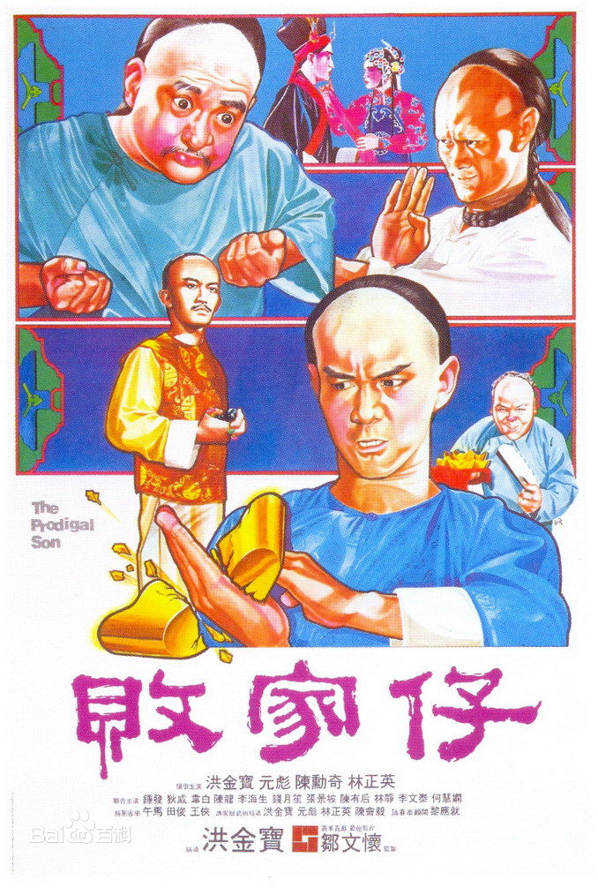
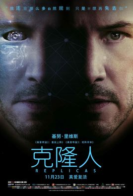
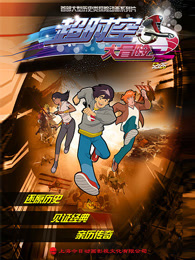

| 电影排行榜 |
| 新片榜 ・ ・ ・ ・ ・ ・ |
| 叶问4 | ||
| 《叶问4》是《叶问》系列影片的第四部，由叶伟信执导，黄百鸣监制，袁和平担任动作导演，甄子丹、陈国坤领衔主演，吴樾、斯科特・阿金斯、吴建豪联合主演。 该片讲述了远赴美国开馆的小龙因授武予洋人得罪当地人马，叶问现身引导小龙以武震慑整个唐人街，以德令华洋各路折服。 | ||
| (137411人评价) | ||
|  | 败家仔 | |
| 《败家仔》是由洪金宝执导并编剧，洪金宝、元彪、陈勋奇、钟发、陈龙、林正英、田俊、午马、狄威、李海生、王侠等人主演的一部功夫电影。该片讲述了佛山富家独子梁赞苦练武功，施展所学之长短二桥咏春为师报仇的故事。 | ||
| (97254人评价) | ||
| 神奇动物 | ||
| 《神奇动物2》影片的感觉，就像看了魔法版的《权力的游戏》，影片里呈现的家族密事，人物之间的感情纠葛，爱恨情仇的交错，都让我觉得应该搞一个电视剧的故事出来，或许这样人物故事线才更加清晰，甚至是更丰满。. | ||
| (37413人评价) | ||
| 无敌破坏王2：大闹互联网 | ||
| 《无敌破坏王2：大闹互联网》是2018年华特・迪士尼影片公司出品的电影，由里奇・摩尔、菲尔・约翰斯东联合执导，约翰・C・赖利、萨拉・丝沃曼、简・林奇、杰克・麦克布瑞尔、塔拉吉・P・汉森和盖尔・加朵等领衔配音。 该片是2012年动画电影《无敌破坏王》的续集，讲述拉尔夫与云妮洛普在互联网中寻找能够修复游戏《甜蜜冲刺》的组件的故事。 该片于2018年11月21日在北美上映,并于同年11月23日在中国内地上映。 | ||
| (281861人评价) | ||
|  | 克隆人 | |
| 由基努・里维斯主演的科幻电影《克隆人》正式宣布于2018年11月23日在中国率先公映，之后会在欧洲地区陆续上画，2019年1月11日全美展开大规模上映 | ||
| 忠犬大营救2018 | ||
| 简介：美女画家顾晓月（刘晓晔 饰）收养了一只遭人遗弃的金毛犬哈林，在宠物医院李医生（纪帅 饰）精心治疗和顾晓月的细心照料下，哈林很快恢复了健康并学会了做饭、拖地、拿拖鞋等家务活，哈林还勇敢地从小偷手里抢回了邻居失窃的钱包，为此它一夜成名。一次意外，哈林吞掉了盗窃头目基德（张山 饰）的钻石，基德想方设法找到哈林意欲杀害。顾晓月和李医生怎样才能救出哈林？ | ||
| 恐怖快递 | ||
| 罗刚（李晨浩 饰）和林娜（汤晶媚 饰）本是一对羡煞旁人的情侣，而某日林娜意外坠亡，推倒了罗刚的正常生活。在罗刚痛不欲生之时，身边好友王来（沈建宏 饰）和伊伊（任娇 饰）却接连收到神秘诡异的快递，并引发一系列离奇死亡事件。密友朱朝宇（姚一奇 饰）偶然从中发现蛛丝马迹，殊不知发给自己的快递也在悄然送来。恐怖快递如影随形，只有林娜的妹妹林洁（汤晶媚 饰）陪在罗刚身旁，与他一步步接近事件真相…… | ||
|
记忆折叠 | |
| 周月虽然相貌温婉美丽，但她性格中却有着不一样的另一面，从小就有心理阴影、饱受家庭暴力创伤。一次，她在男朋友的带领下前往看房，虽然心中一直感到莫名的不安，但还是禁不住男朋友的要求，最后同意住进这座充满古韵风格的别墅之中。 | ||
|  | 超时空大冒险 | |
| 乘上时空号，跟着时光旅行社，一起穿梭时空，见证重要历史吧！ | ||
| 冒牌搭档 | ||
| 《冒牌搭档》由林子聪、陈浩民、陈国坤、金刚、林雪等主演的剧照(22张) 喜剧电影。该片讲述了一帮穷困潦倒的黄金配角迫于现实的无奈，不得不找来快餐外卖员冒充大牌明星而闹出的一系列啼笑皆非的故事。 | ||